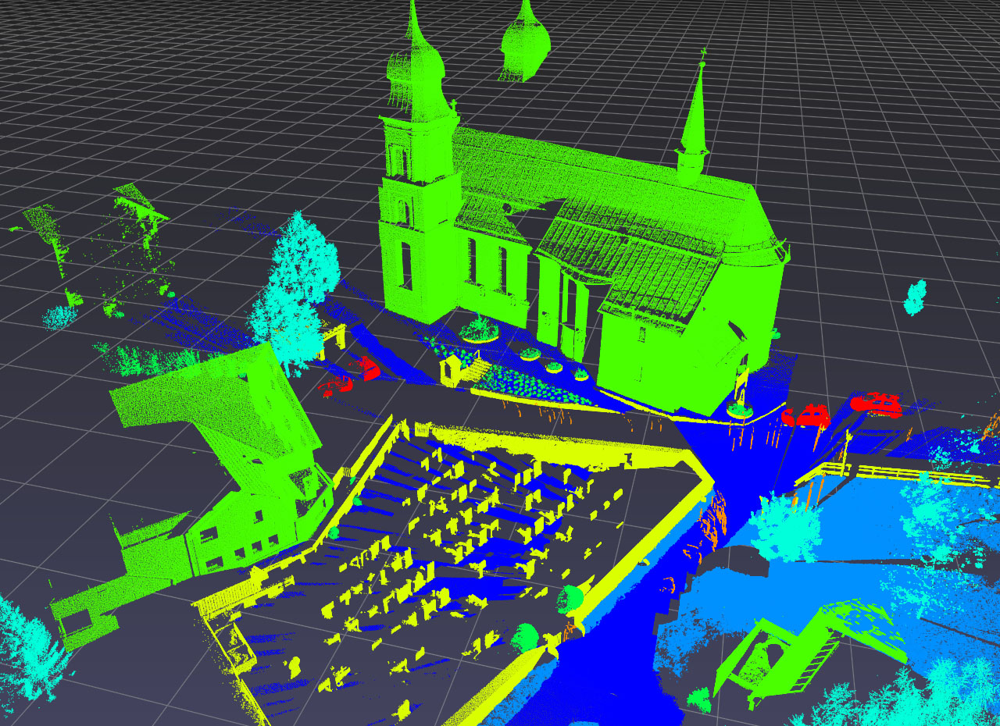
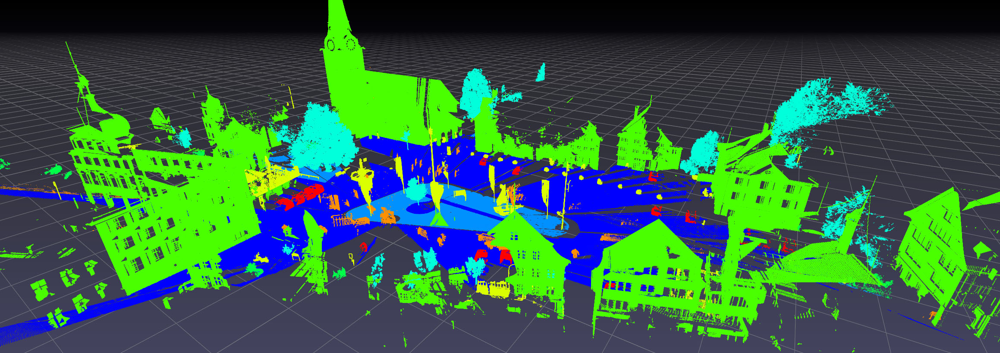
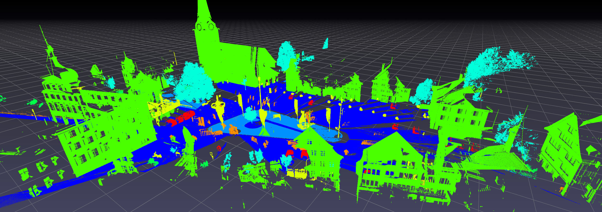

Semantic3D¶
Download the following zip files from the Semantic3D website.
bildstein_station1_xyz_intensity_rgb.7z(0.20 GB) [download]sem8_labels_training.7z(0.01 GB) [download]
Extract the zip files and check that you have at least the following files.
bildstein_station1_xyz_intensity_rgb.txtbildstein_station1_xyz_intensity_rgb.labels
Point clouds are stored in .txt files, and their per-point labels are stored in corresponding .label files.
In a Python terminal, import the following Python packages.
>>> import pptk
>>> import pandas as pd
>>> import numpy as np
Copy and paste the following function definitions for reading Semantic3D .txt and .labels files into your Python terminal.
Note these functions are merely simple wrappers around the pandas.read_csv() function.
def read_points(f):
# reads Semantic3D .txt file f into a pandas dataframe
col_names = ['x', 'y', 'z', 'i', 'r', 'g', 'b']
col_dtype = {'x': np.float32, 'y': np.float32, 'z': np.float32, 'i': np.int32,
'r': np.uint8, 'g': np.uint8, 'b': np.uint8}
return pd.read_csv(f, names=col_names, dtype=col_dtype, delim_whitespace=True)
def read_labels(f):
# reads Semantic3D .labels file f into a pandas dataframe
return pd.read_csv(f, header=None)[0].values
Read bildstein_station1_xyz_intensity_rgb.txt.
>>> points = read_points('bildstein_station1_xyz_intensity_rgb.txt')
>>> points
x y z i r g b
0 20.622999 40.276001 -1.999 -1031 127 141 154
1 20.362000 40.375000 -2.239 -941 130 141 159
2 20.360001 40.375999 -2.402 -1083 139 151 165
... ... ... ... ... ... ... ...
29697590 60.196999 82.137001 11.085 -1619 134 140 172
[29697591 rows x 7 columns]
Read bildstein_station1_xyz_intensity_rgb.labels.
>>> labels = read_labels('bildstein_station1_xyz_intensity_rgb.labels')
>>> labels
array([0, 0, 6, ..., 0, 0, 0], dtype=int64)
Visualize (refer to the viewer page for control details).
>>> v = pptk.viewer(points[['x', 'y', 'z']])
>>> v.attributes(points[['r', 'g', 'b']] / 255., points['i'])
>>> v.set(point_size=0.001)
Visualize point labels, showing only points with non-zero labels (in this dataset label 0 denotes lack of a label).
>>> mask = labels != 0
>>> P = points[mask]
>>> L = labels[mask]
>>> v = pptk.viewer(P[['x', 'y', 'z']])
>>> v.attributes(P[['r', 'g', 'b']] / 255., P['i'], L)
>>> v.set(point_size=0.001)
Toggle between attributes using the [ and ] keys.
 |
 |
 |
{kind=link}
The Semantic3D bildstein1 point cloud,
with 0-labeled points removed, visualized using pptk.viewer().
Points are colored by RGB (left), intensity (middle), semantic label (right). |
Basic support for point annotation¶
Selecting points. Holding Ctrl while performing a LMB drag creates an “additive” selection box; when the LMB is released, all points in the box are added into a set of currently selected points. Holding Ctrl-Shift while performing the LMB drag creates a “subtractive” selection box; when the mouse button is released, all points in the box are removed from the set of currently selected points. Individual points can be added or removed from the set by left clicking on a point while holding Ctrl or Ctrl-Shift. Right click to deselect all.
Note
On Mac, use ⌘ instead of Ctrl
Query the selected point indices using pptk.viewer.get().
>>> indices = v.get('selected')
When editting a selection containing a large number of points, consider “saving” often.
If the selection is ever lost (e.g. accidental deselection),
the selection can be restored using pptk.viewer.set().
>>> v.set(selected=indices)
Visualizing very large point clouds¶
The above procedure can be repeated for other point clouds in Semantic 3D. However, pptk viewer may fail to start for larger inputs (the actual input size depends on system and GPU memory; on certain machines this is known to happen for inputs larger than roughly 100M points). One workaround is to subsample (keep every k-th point) the input point cloud. Though imperfect, this in many cases can still give a reasonably accurate view of the point cloud.
Here we show how to visualize the largest point cloud in Semantic3D.
sg27_station2_intensity_rgb.7z(2.72 GB) [download]
Read points (this may take a few minutes as the point cloud is quite large; on a test machine this took ~6 min to load and used ~9GB of memory).
>>> points = read_points('sg27_station2_intensity_rgb.txt')
>>> points
x y z i r g b
0 -79.001999 15.598000 10.773 -1709 152 126 99
1 -101.685997 25.760000 15.934 -1111 32 22 21
2 -101.842003 25.563999 15.966 -1279 131 102 84
... ... ... ... ... ... ... ...
496702860 42.551998 94.640999 2.531 -1479 140 108 113
[496702861 rows x 7 columns]
(Optional) Consider saving points to .npy files for faster loading in the future.
>>> np.save('sg27_station2.xyz.npy', points[['x', 'y', 'z']].values)
>>> np.save('sg27_station2.rgb.npy', points[['r', 'g', 'b']].values)
>>> np.save('sg27_station2.i.npy', points['i'].values)
Read labels.
>>> labels = read_labels('sg27_station2_intensity_rgb.labels')
>>> labels
array([2, 2, 2, ..., 6, 6, 6], dtype=int64)
Subsample points and labels by keeping only every 6-th point. This leaves 82,783,811 points (just under 100M points).
>>> P = points[:: 6]
>>> L = labels[:: 6]
Remove 0-labeled points.
>>> mask = L != 0
>>> P = P[mask]
>>> L = L[mask]
Visualize.
>>> v = pptk.viewer(P[['x', 'y', 'z']])
>>> v.attributes(P[['r', 'g', 'b']] / 255., P['i'], L)
>>> v.set(point_size=0.001)
{kind=link}
 

{kind=link}
The Semantic3D sg27_station2 point cloud visualized using pptk.viewer().
Point cloud has been subsampled by a factor of 6 and removed of 0-labeled points.
Points are colored by RGB (top), intensity (middle), semantic label (bottom). |